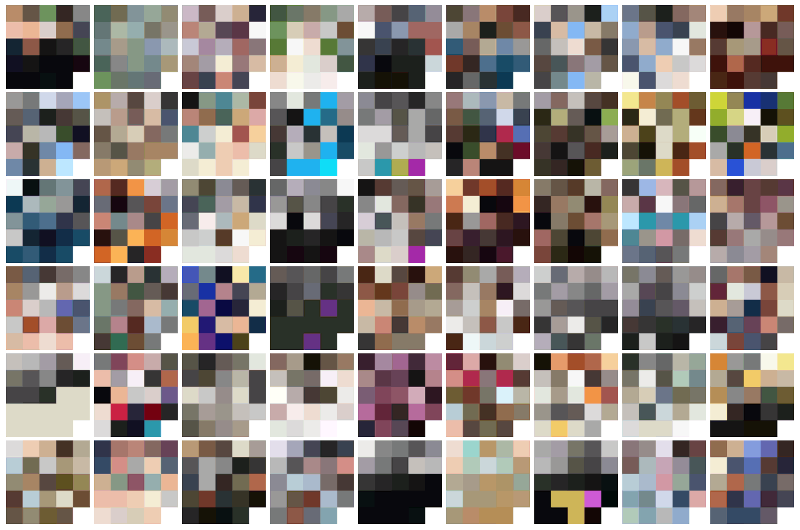

Hello. Welcome to Radarboy.
We are George Gally and Gareth Chisholm.
Breaking your Internet nicely since 1998.
Toys, technology, installations, experiments, startups.
If you have a project you want to talk about, get in touch.

Trailer – Issue2
13 years after we gave you the world's first animated gif magazine, here's issue 2.

Colour of My friends
Sampling Facebook friends down to their basic colours.
Colour of My friends
Sampling Facebook friends down to their basic colours.
Visualizing Sound
Sound experiments with HTML5 and the canvas.
If you have an old browser or use Safari, you're not going to have much luck.
Sound experiments with HTML5 and the canvas.
If you have an old browser or use Safari, you're not going to have much luck.
Visualizing Internetix 2013
Tracking conference delegates using the wifi network.
Visitors were most likely to be named Craig.
Preferred sushi over steak.
And hot chocolate over filter coffee!?
Key Rings
When my parents moved back here they had their cars serviced by the local garage up the road.
Everytime you collected your car, they had your keys attached to these tags cut from cigarette carton boxes.
I started collecting the tags in the early 90s for about seven or eight years until the garage made way for a 24hr shop and McDonalds with a drive-through.
Dog reactive
Testing reactive visuals, with Nietzsche the wonder dog, for the awesome band, http://www.hunterasahorse.com/
And yes, I know there's a lot of dogs on our site at the moment, but, hell, it's our site, and dogs are awesome. Especially this one :)
http://www.hunterasahorse.com/